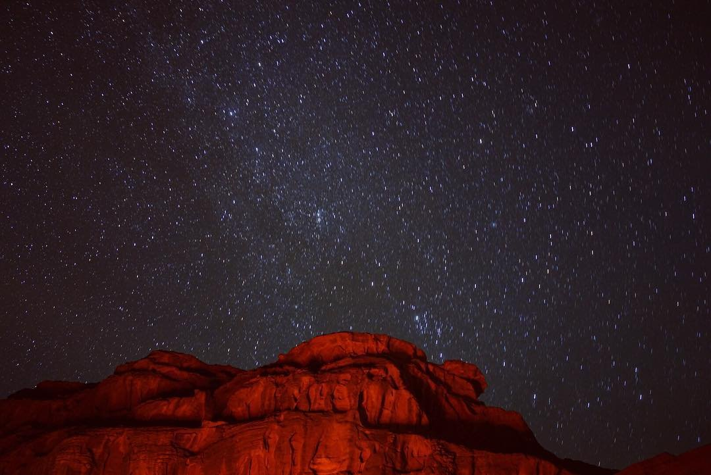
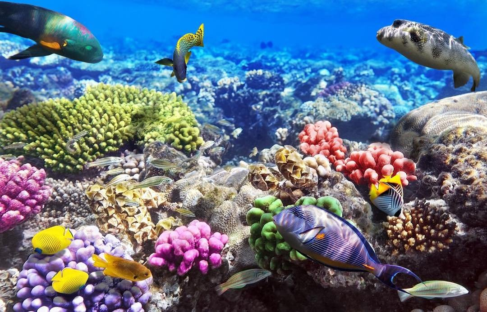
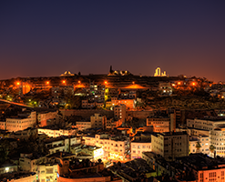
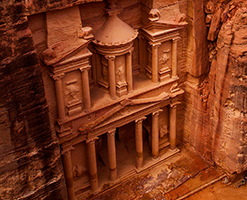
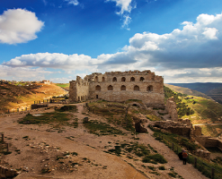
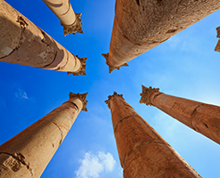

الصفحة الرئيسية
الوجهات
معلومات عن السفر
عن الوزارة
المركز الاعلامي
المشاريع والمبادرات
اتصل بنا
1 / 3
Caption Text
2 / 3

Caption Two
3 / 3

Caption Three
❮
❯
الوجهات




انظر الى الكل
Your browser does not support HTML video.
كانت المملكة الأردنية الهاشمية ولا تزال تأسر زائريها، منذ العصور الغابرة وحتى يومنا هذا. و لا تنفك هذه الدولة الفتيّة عن إدهاش جيل بأكمله بفعل روحها المعاصرة والنابضة بالحياة. لطالما شكّلت صورة مدينة البترا الأثرية، التي نحتها الأنباط في الصخر قبل ما يزيد عن ألف عام، الانطباع الأول الراسخ في أذهان الكثيرين حول الأردن. رغم أن البترا واحدة من أهم أماكن الجذب السياحي في الشرق الأوسط، إلاّ أنّ الأردن يحوي الكثير من التجارب الأخرى التي تدهش الزائر المعاصر. ما بين البحر والصحراء، و الشرق والغرب، يتربع الأردن على أرض جميلة بتناقضات خلاّبة، من وادي الأردن الخصب بمزروعاته دائمة التبدّل إلى الوديان الصحراوية النائية والمهيبة بعظمتها. بإمكان الزوار استكشاف قلاع وقصور الصحاري المدهشة والاستمتاع ببرية وادي رم أو الاستجمام في مياه البحر الأحمر الباعثة على الراحة.
معلومات عن السفر
معلومات أساسية
اماكن الاكل
اماكن البقاء